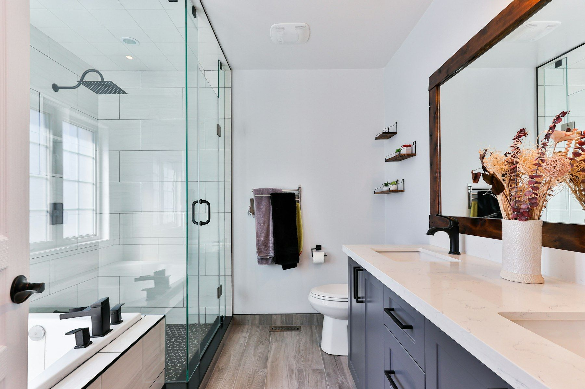
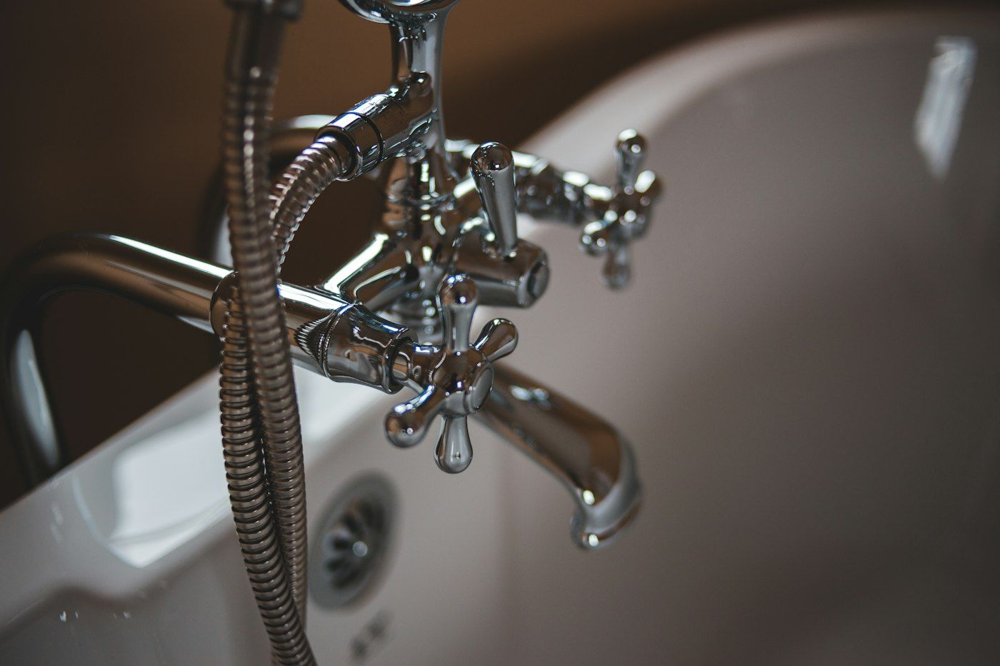
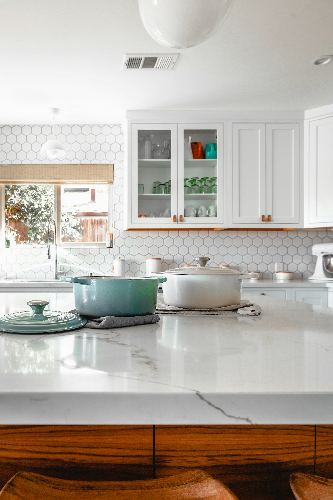

Nashville, Tennessee
Lines, fixtures, and the quiet work in the walls — for houses that were built to last, or should have been.

The trade
Copper & Oak is imagined as a Nashville firm for remodels and careful repair: brass and stone where they belong, straight runs where they don’t show, and a finish that looks like the house, not like a showroom sticker.
Leaks, valves, and the small failures that should be solved once, and left alone.
Kitchens and baths taken back to the studs, or simply brought up to a better fixture.
Brass, nickel, and stone, specified to the room and installed as if they had always been there.


Davidson County and nearby
This is a Brightverse concept design, not a working plumber’s listing. The page does not take service calls.